Outline mode
是 Emacs 的一个强有力的模式。它可以使你轻松的操纵结构
化的文档。它可以让你只显示文档的某一个分支，只显示主干，只显示一个子树。
下面就是一个 LaTeX 文档的各种 outline 操作的结果示范。由于 outline-minor-mode 的键绑定前缀 C-c @ 过于复杂，大部分经常使用 outline 的人想把它设置为另一个键，所以以后我在叙述时直接称呼函数名字和简化前缀 的键绑定。具体的键绑定请用 C-h w 查询。
更改前缀可以在启动 outline-minor-mode 之前，用改变 outline-minor-mode-prefix 变量的办法一次完成。比如：
(setq outline-minor-mode-prefix [(control o)])就可以把前缀改成 C-o. 以后我们实例中的键绑定都使用 C-o.
首先，给大家一个 outline 的总体印象。我们使用 outline 来看看本文的主要内容 :)
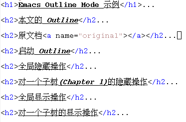
这是一个非常简单的 LaTeX 文档: outline.tex
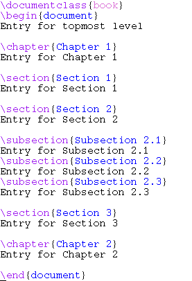
我们来把文档的各部分术语解释一下。
M-x outline-minor-mode 就可以启动 Outline。还有一个 outline-mode 是 一个 major mode，一般都不用它。
光标在任何位置，只要执行这些操作，文档的显示就会变化成需要的样子。
这个操作如果不带参数，隐藏所有文档子结构，只剩最上层。
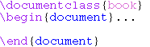
这是参数为4的操作，显示至文档第4层子结构。
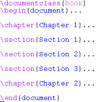
文档的所有 Entry 都被隐藏。只显示主干。
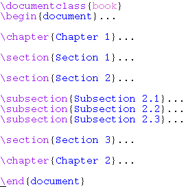
所有文档部分展开时，光标移动到 Chapter 1，执行 hide-subtree。整个 Chapter 1 的子树被折叠起来。
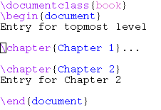
所有文档部分展开时，光标移动到 Chapter 1，执行 hide-other。除了 Chapter 1， 其它子树全部被折叠起来。这个操作正好与 hide-subtree 互补。
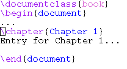
所有文档部分展开时，光标移动到 Chapter 1，执行 hide-leaves。所有 Chapter 1 子树下的所有级别的 entry 被隐藏。也就是说，Chapter 1 下，只 显示 branch.
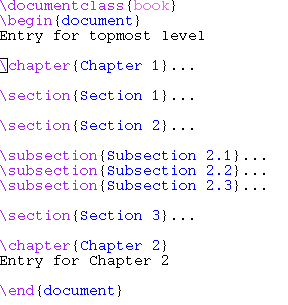
所有文档部分展开时，光标移动到 Chapter 1，执行 hide-entry。Chapter 1 的 Entry 被隐藏，但是所有子树都不动。
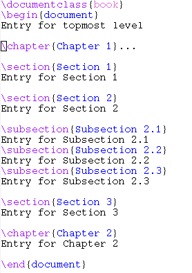
显示所有文档。结果就是原文档。
为了演示，我们从全部隐藏的情况开始：
show-children 只显示直接的下一代子树，而不显示间接的下一代。这里， \begin{document} 的直接的下一代就是 \chapter{...}。
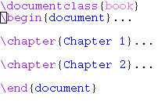
把光标移动到 Chapter 1，执行 show-entry。Chapter 1 的 Entry 被显示， 但是所有子结构还是保持隐藏。 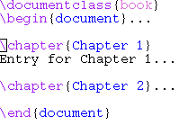
把光标移动到 Chapter 1，执行 show-branches。Chapter 1 这棵子树之下 的各级“树干”被显示，但是各级 entry 还是保持隐藏。Chapter 1 自己的 entry，由于我们上一步已经显示，所以保持不变。
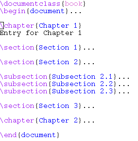
把光标移动到 Chapter 1，执行 show-subtree。Chapter 1 及其所有子结构 全部被扩展。
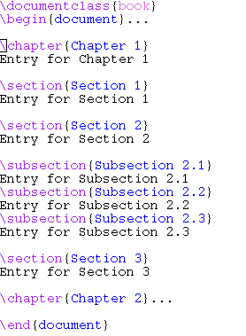
在 outline 模式下，有几种特殊方便的移动方式。